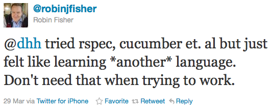
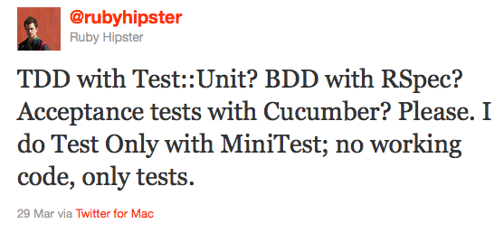
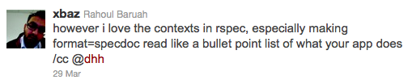
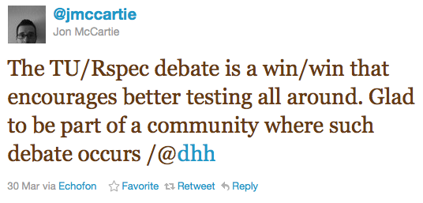

RSpec vs. test/unit
(and minitest for Hipster Steve)
Carol Nichols
@dhh started a big twitter argument...
Readability
def test_something
assert_equal value1, value2
end
vs.
it "does something" do
value1.should == value2
end
Is it just green vs blue? -@glv
- Which is easier for new developers/testers to learn?

- Which encourages us to write better tests and code?
- Which is easier to maintain?
Complexity - RSpec
- RSpec modifies Object
- RSpec changed a lot between 1.3 & 2; sub-gems
- RSpec is slower
Added complexity should be worth it. For @dhh, it isn't.
Complexity - test/unit
- In Ruby 1.9, test/unit is a wrapper on top of minitest
- minitest: 1132 LOC
- test/unit: 235 LOC

Features RSpec has that I like
- rspec-rails request specs: add :js => true to run with selenium
- RSpec documentation format
- Nested contexts

- Failure output
Other features
| Feature |
test/unit |
minitest |
RSpec |
| Included in 1.9.x stdlib |
yes |
yes |
no |
| Mocking |
no |
yes |
yes |
| Pending |
no |
yes ("skip") |
yes ("pending") |
Time of a trivial example
| Framework |
Time |
| test/unit |
0.097s |
| RSpec |
0.532s |
| minitest |
0.075s |
| minispec |
0.074s |
Conclusions
- 
- ... I might use minispec on my next project.
- TALK AT PGHRB!!
Thanks! Talk is up on github.com/clnclarinet/rspec-vs-testunit